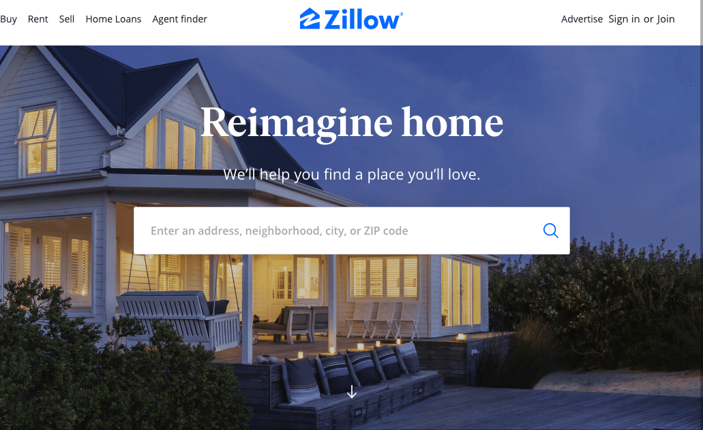
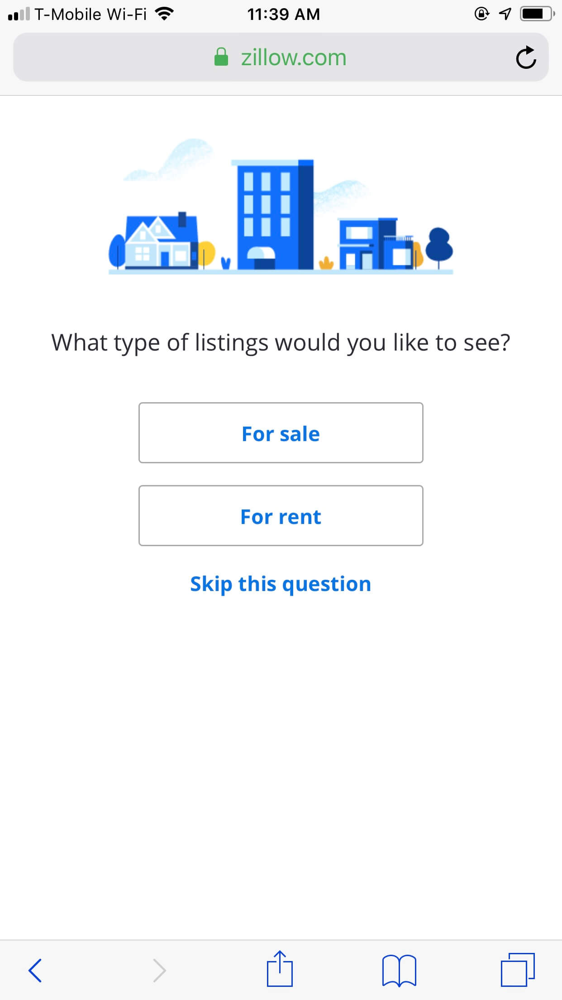

Before the age of the technology finding a place to buy or rent was a challenging task. We mostly relied on newspapers, realtors, or driving around town looking for "For Sale" or "For Rent" signs. In today's world though, well-thought-out websites like Zillow have made this task almost seem effortless.
Zillow calls itself a real estate and rental marketplace dedicated to helping consumers find home rentals and home sales. The site offers a lot more other services, but for this analysis, I will limit to four criteria that make Zillow.com usability exceptional.
Are navigation conventions followed?
The logo placement is located right at the top of the page rather than being on the left side corner as most users would generally expect it to be. I find the logo in the middle to overshadow the right side of the primary navigation on all pages. The naming is clear, and all the links lead to the correct services.
Zillow Primary NavigationBreadcrumbs: Where am I on the page?
Find your location a page on zillow.com requires attention. Zillow is not a website that most users interact with daily, so for users that aren't too familiar with the site will have to pay special attention to the listings and rental pages. To minimize this issue, I think Zillow should implement breadcrumbs to make it easy to navigate the page.
Site Identification: Whose site is this?
Right off the bat, it is hard to miss the logo. Every element on the home page reinforces what the site is all about. I think for first time user looking at the homepage can quickly identify the purpose of the website. The search bar itself has enough information to help accomplish your goals.
 Zillow logoColor choice
Color choice may not be an issue to some users, but I find the light blue to be blinding for PC or desktop users, and as mobile, the colors seem refined maybe due to the size of the screen. I also think the text in the buttons on the cards above the footer could use a dark color to make it easy on the eye.
Conclusion
 Zillow MobileOne take away is that usability design for Zillow is outstanding on both mobile and desktop. Although for desktop users, there is a weird Zillow logo located in the social media section of the page. As for mobile users, user experience is mostly enjoyed on smaller screens, as usability design is much more refined.